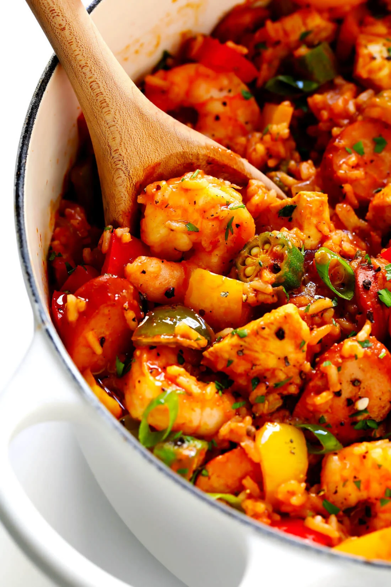

Jambalaya

Delicious cajun spices give this dish an unforgettable flavor. There is something so incredibly comforting about the warm, juicy
goodness that jambalaya brings. And the best part is, this single-pot dish is easily cooked. The uniqueness of jambalaya
came about from families living with fewer means, who may have only had one pot to cook with. But don't let the simplicity
of this dish fool you -- this is a taste sensation that will leave your tastebuds reeling for hours!
----- Ingredients:
- Hot Sausage
- Chicken Breasts
- Shrimp
- Onions, Celery & Green pepper (the cajun "holy trinity")
- Jalapeño pepper
- Cajun seasoning
- Chicken stock
- Crushed tomatoes
- Jasmine Rice
----- Cooking Steps:
- First, saute your chicken and sausage in your large pot until browned, or for about 7 minutes. Set aside when done.
- Place your "holy trinity" in the pot on medium heat. Stir and saute until onions are transparent.
- Add in a bit of water, along with chicken stock, rice, and Cajun seasonings, stirring frequently.
- Let this cook for 15-20 minutes until rice absorbs the water and becomes tender.
- add in shrimp, chicken and sausage, and let this cook for 5-7 more minutes.
- Once shrimps are cooked and pink, stir everything in, season well with Cajun, salt and pepper, and a Garnish of your choice. Then serve and enjoy!
credits --
back to recipes page